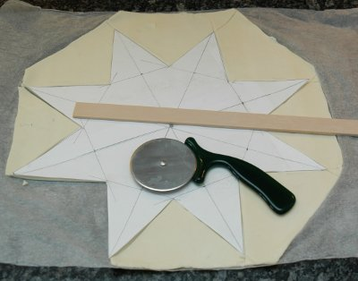

| Zutaten für 8 Stück: | |
| 3 | rund ausgewallte Blätterteige ca. 32cm Durchmesser |
| 1/2 Beutel | dunkle Kuchenglasur ca. 60g, geschmolzen |
| 3 | frische Eigelbe |
| 3 El | Zucker |
| 3 dl | Milch |
| 5.5 Blatt | Gelatine |
| 80 g | dunkle Schokolade |
| 1.5 El | Kakaopulver |
| 150 g | reifer Mango (ca. 1/2 Mango) |
| 1.5 El | Puderzucker |
| 1 El | Zitronensaft |
| 2.5 dl | Rahm |
Vor- und zubereiten: ca. 50 Minuten Backen: ca. 30 Minuten Ergibt 8 Stücke.
Einen 8-zackigen Stern von ca. 32cm Durchmesser auf ein Papier zeichnen und ausschneiden.

Jedes Teigblatt mit dem Backpapier entrollen. Mit Hilfe der Sternschablone einen Stern ausschneiden, restlichen Teig entfernen und zum Beispiel Brussienne damit machen.
Beim ersten Stern zwischen den Zacken diagonal 4 Linien einritzen.
Bei den beiden anderen Sternen die 4 Diagonalen durchschneiden. Sterne mit dem Backpapier auf ein Blech legen, vor dem Backen kühl stellen.
Nacheinander jeden Stern ca. 10 Minuten in der Mitte des auf 220°C vorgeheizten Ofens backen. Herausnehmen, und auskühlen.
Schokoladenglasur nach Beutelangabe zubereiten.
Den unzerschnittenen, ganzen Stern und 8 Rhomben auf einer Seite mit Schokolade-Glasur bestreichen, trocknen lassen.
Eigelbe und Zucker in einer Schüssel rühren, bis die Masse hell ist.
Milch aufkochen, unter rühren mit dem Schwingbesen zur Eimasse geben, alles in die Pfanne zurück giessen, bei mittlerer Hitze unter ständigem Rühren bis vors Kochen bringen.
Pfanne von der Platte nehmen und die Creme auf 2 Schüsseln aufteilen: ca. 2.5 dl Creme in eine Schüssel geben und den Rest (ca. 1.5 dl) in einer zweiten Schüssel beiseite stellen.
Schokoladenfüllung: 2.5 Blatt Gelatine vorgängig 5 Minuten in kaltes Wasser einlegen.
Die Gelatine unter die Creme rühren, ca. 2 Minuten weiter rühren, durch ein Sieb giessen.
Schokolade mit Kakaopulver zur Creme geben, mit dem Schwingbesen rühren, bis die Schokolade geschmolzen ist.
Mangofüllung: 3 Blatt Gelatine vorgängig 5 Minuten in kaltes Wasser einlegen. Gelatine unter die restliche Creme rühren, ca. 2 Minuten weiter rühren. Durch ein Sieb giessen.
Mangostücke mit dem Puderzucker und Zitronensaft mit dem Mixerstab fein pürieren und unter die Creme rühren.
Beide Cremen ca. 30 Minuten kühl stellen, bis die Massen am Rand leicht fest sind.
Danach die Cremen glatt rühren. Den Schlagrahm aufschlagen und je die Hälfte des Schlagrahms sorgfältig unter die Schokolade und die Mangocreme ziehen. Ca. 30 Minuten im Kühlschrank leicht fest werden lassen.
Formen: ganzen Stern mit der Schokoladenseite nach oben auf eine Tortenplatte legen. Schokoladenfüllung darauf verteilen.
Rhomben mit der Schokoladenseite nach oben darauf legen, Mangofüllung darauf verteilen.
Restliche Rhomben darauf legen, mit Puderzucker bestäuben. Vor dem Servieren ca. 2 Stunden kühl stellen.
Lässt sich vorbereiten: Cremeschnitten-Stern 1/2 Tag im Voraus zubereiten, zugedeckt im Kühlschrank aufbewahren.
Pro Stück: (1/8) 40g Fett, 9g Eiweiss, 38g Kohlenhydrate, 2261 kJ (540 kcal)
Betty Bossi Zeitung, 10-04 Seite 4
Als Sylvesterdessert zubereitet. Sieht sehr festlich aus aber ist enorm aufwendig. Ich habe das dann nicht so ernst genommen mit den zweiten 30 Minuten mit der Creme im Kühlschrank. Wegen der Gelatine wird die Creme immer fester und war dann nicht mehr streichbar. So richtig irre schmeckten die Cremen leider auch nicht obwohl die Schokoladenglasur einen guten Biss gibt. Sandra meint man könnte es mit einem echten Schokoladenmousse probieren und mit einer leichten Vanniellecreme. Mal schauen ob ich das nochmals probiere. (Das Bild ist übrigens von Sandra gemacht.) RE 31.12.2009